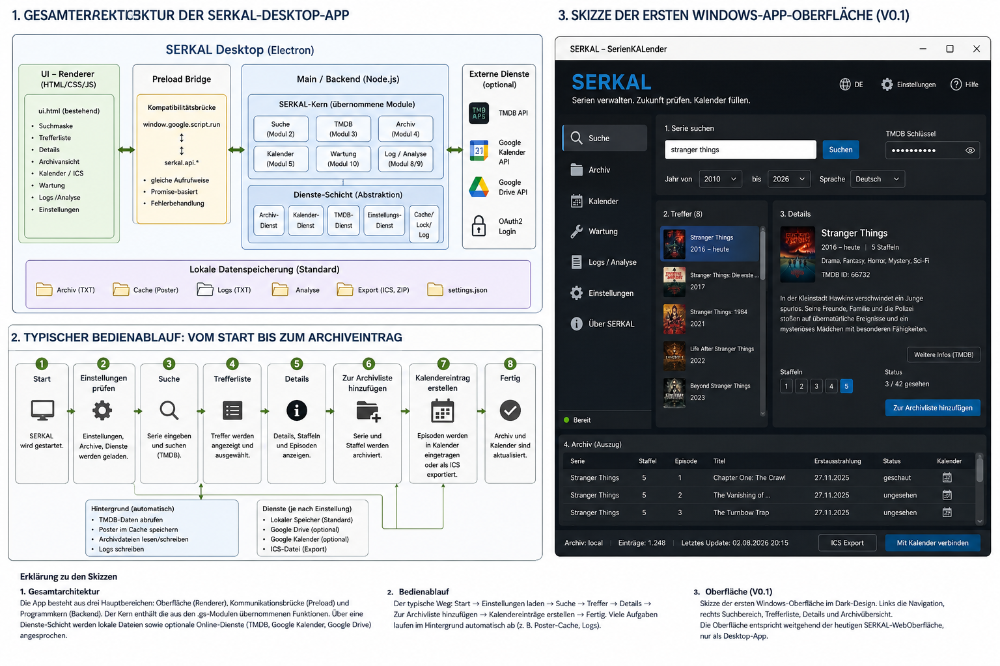
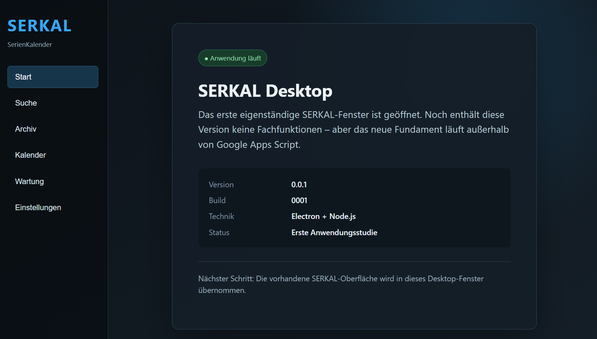
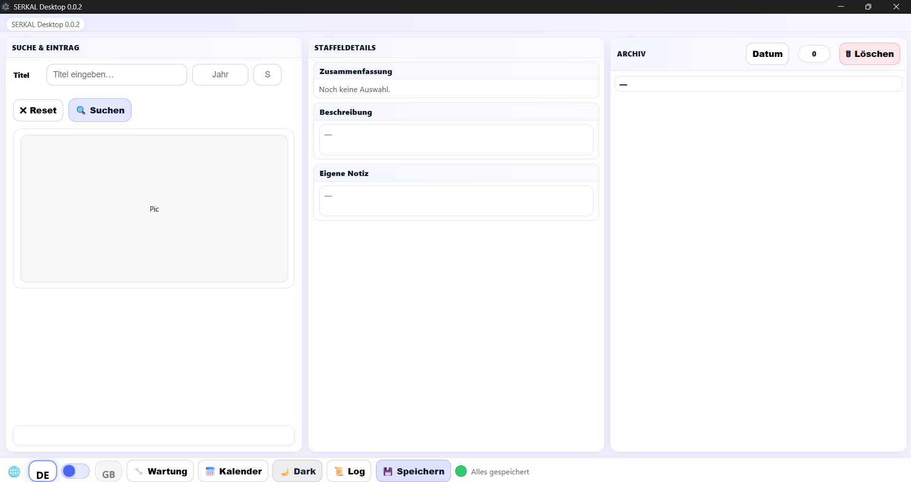
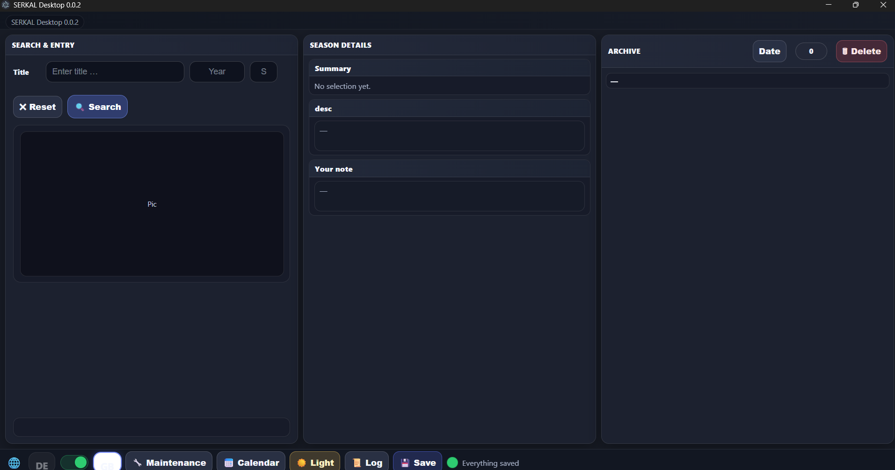

Hier darf man unfertige Dinge sehen. SerKal verlässt seine bisherige Heimat in Google Apps Script und wird zu einer eigenständigen Desktop-Anwendung. Dieses Entwicklungstagebuch dokumentiert den Weg dorthin – mit Entwürfen, ersten lauffähigen Versionen, Fortschritten und gelegentlich auch Ideen, die sich unterwegs noch verändern dürfen.
04.08.2026
Eine ziemlich große Idee
Was wäre, wenn man SerKal einfach installieren könnte? Kein Apps-Script-Editor, keine Module kopieren, keine eigene Web-App bereitstellen. Herunterladen, installieren, starten.
Aus dieser Frage entstand der Plan für SerKal Desktop. Die vorhandene Oberfläche und die über Jahre gewachsene Programmlogik sollen dabei nicht weggeworfen werden. Sie bilden die Grundlage für die neue Anwendung.

Erste Entwurfsskizze für SerKal Desktop: Architektur, Bedienablauf und mögliches Erscheinungsbild. Planungsstand August 2026. Die Skizze ist ein Zielbild, keine verbindliche fertige Oberfläche.
07.08.2026
Drei Tage später: Es lebt.
Die ersten Planungen haben inzwischen etwas Greifbares hervorgebracht: SerKal Desktop 0.0.1 – Build 0001 läuft als eigenständige Anwendung unter Windows.

SerKal Desktop 0.0.1, Build 0001: die erste tatsächlich gebaute Desktop-Anwendung.
Es kann noch keine Serien suchen. Es kennt noch kein Archiv. Es füllt noch keinen Kalender. Aber es läuft.
Zum ersten Mal startet SerKal außerhalb von Google Apps Script in einem eigenen Desktop-Fenster. Electron und Node.js bilden das neue Fundament. Das sieht vielleicht nach einem kleinen Schritt aus – technisch ist es der entscheidende Anfang.
Mit Version 0.0.2 sieht SERKAL Desktop erstmals wirklich nach SERKAL aus.
Die bisherige SERKAL-Oberfläche wurde in die neue Windows-Anwendung übernommen und an das Desktop-Fenster angepasst. SERKAL lässt sich nun auch im Vollbild verwenden. Light und Dark Mode funktionieren ebenso wie die Umschaltung zwischen Deutsch und Englisch. Lediglich einige kleine grafische Elemente – darunter die Sprachflaggen – fehlen zu diesem Zeitpunkt noch.

SERKAL Desktop 0.0.2 – deutsche Oberfläche im Light Mode.

SERKAL Desktop 0.0.2 – englische Oberfläche im Dark Mode.
Unter der Oberfläche ist noch vieles Baustelle. Die Funktionen der bisherigen Google-Apps-Script-Fassung werden erst nach und nach in die Desktop-Anwendung übertragen.
Auch der erste richtige Build von 0.0.2 hatte noch eine kleine Überraschung parat: Windows hielt hartnäckig einen Build-Ordner gesperrt. Nach etwas Detektivarbeit war der Täter gefunden – eine alte Eingabeaufforderung hatte sich dort häuslich eingerichtet. 😄 Danach lief der Build sauber durch.
SERKAL Desktop 0.0.2 ist damit die erste Version, die nicht nur technisch läuft, sondern auch schon deutlich nach SERKAL aussieht.
August 2026
SERKAL Desktop 0.0.3 / 0.0.4 – Der Desktop wird zu SERKAL
Mit 0.0.3 und 0.0.4 wird aus der ersten Oberflächenstudie Schritt für Schritt eine richtige Desktop-Ausgabe von SERKAL. Die bisherige Oberfläche wird vollständig in die Electron-Anwendung übernommen und für das Desktop-Fenster angepasst.
Programmname, Versionsanzeige und Desktop-Darstellung werden vereinheitlicht. Die Anwendung lässt sich bereits als eigenständiges Windows-Programm bauen. Light und Dark Mode sowie die deutsch-englische Oberfläche funktionieren.
Aus dem technischen Prototyp wird damit Schritt für Schritt die neue Desktop-Ausgabe von SERKAL.
Nächster Schritt: Die echten Daten müssen zurück.
August 2026
SERKAL Desktop 0.0.5 – Das Archiv lebt, und der Kalender hört wieder zu
Mit Version 0.0.5 arbeitet SERKAL Desktop erstmals wieder mit den vorhandenen echten SERKAL-Archivdaten. Das Archiv wird direkt aus dem vom Nutzer gewählten Archivordner geladen. Die gespeicherten Serien erscheinen wieder in der rechten Archivliste und lassen sich auswählen.
Staffelinformationen werden angezeigt, TMDB liefert Beschreibungen und Serienbilder. Ein lokaler Bildcache sorgt dafür, dass bereits geladene Bilder praktisch ohne Verzögerung erscheinen. Ältere Cache-Einträge sollen nach einer festgelegten Zeit erneut bei TMDB geprüft werden.
Neue Serien können gesucht und in das Archiv übernommen werden. Auch vorhandene Einträge lassen sich wieder aufrufen und bearbeiten. Änderungen werden zunächst sichtbar vorgemerkt und erst durch „Speichern“ dauerhaft übernommen.
Google Kalender – jetzt direkt
Ein besonders wichtiger Meilenstein ist die neue direkte Verbindung mit Google Kalender. SERKAL Desktop besitzt inzwischen eine eigene Google-OAuth-Anmeldung. Nach der einmaligen Freigabe kann das Programm die Episodentermine unmittelbar in den ausgewählten SERKAL-Kalender eintragen.
Der bisher notwendige Umweg über den Download und den manuellen Import einer ICS-Datei entfällt im Google-Modus. ICS bleibt als Alternative für andere Kalender erhalten.
Der erste vollständige Praxistest
Der erste vollständige Praxistest wurde mit „Reacher“, Staffel 4, durchgeführt. Die Serie wurde im Archiv gespeichert und sämtliche Episodentermine erschienen anschließend automatisch und in der richtigen Kalenderfarbe im Google-Kalender.
Die erste Werkskizze ist Wirklichkeit
Ganz am Anfang der Desktop-Entwicklung stand auf dieser Werkstattseite die oben gezeigte Werkskizze mit einem grundlegenden Acht-Punkte-Ablauf:
✓ 1. SERKAL starten✓ 2. Einstellungen und Dienste laden✓ 3. Serie suchen✓ 4. Treffer auswählen✓ 5. Staffel- und Episodendetails anzeigen✓ 6. Serie ins Archiv aufnehmen✓ 7. Kalendereinträge direkt erzeugen✓ 8. Archiv und Kalender aktualisieren
Mit SERKAL Desktop 0.0.5 sind erstmals alle acht Punkte dieses ursprünglichen Plans umgesetzt. Der erfolgreiche Test mit „Reacher“, Staffel 4, hat den damals nur skizzierten Arbeitsablauf einmal vollständig durchlaufen.
Der im August entworfene grundlegende SERKAL-Desktop-Arbeitsablauf ist mit Version 0.0.5 erstmals vollständig umgesetzt.
Aktueller Stand
SERKAL Desktop 0.0.5 ist bereits schnell und im täglichen Betrieb grundsätzlich verwendbar. Archiv, TMDB-Bilder und Google-Kalender arbeiten zusammen. Vor dem Abschluss der Version folgt noch der Feinschliff: Löschen, Terminverschiebungen, Protokollanzeige und abschließende Archivtests.
Das noch fehlende Löschen war im ursprünglichen Acht-Punkte-Ablauf nicht enthalten. Es ist eine zusätzliche Archivverwaltungsfunktion und ändert deshalb nichts daran: Die ursprüngliche Werkskizze ist bereits Realität geworden.
Fortsetzung folgt …
Der grundlegende Weg von der ersten Skizze bis zum vollständigen Arbeitsablauf ist geschafft. Die nächsten Schritte gelten dem Feinschliff und dem weiteren Ausbau von SERKAL Desktop – und die nächsten sichtbaren Meilensteine landen wieder hier in der Werkstatt.